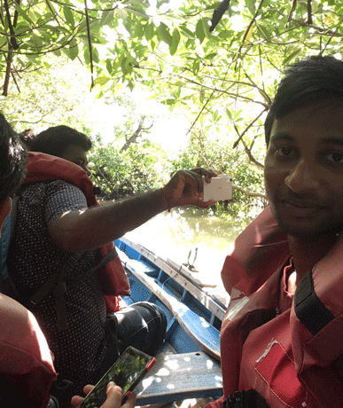
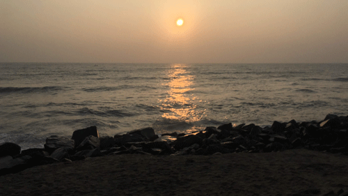

Introduction to Pichavaram Mangrovee
Pichavaram is a village near Chidambaram in Cuddalore District, Tamil Nadu, India.It is located between the Vellar estuary in the north and Coleroon estuary in the south. The Vellar-Coleroon estuarine complex forms the Killai backwater and the mangroves that are permanently rooted in a few feet of water. It is located at the distance of 243 km from Chennai and 15 km from Chidambaram.
Pichavaram consists of a number of islands interspersing a vast expanse of water covered with mangrove forest. The Pichavaram mangrove Forest is one of the largest mangrove forests in India covering about 1100 hectare of area. It is separated from the Bay of Bengal by a sand bar. The biotope consists of species like Avicennia and Rhizophora. It also supports the existence of rare varieties of economically important shell and finfishes
Pichavaram is a village located near to Chidamabaram in Cuddalore District, Tamil Nadu. The village is located between the Vellar estuary in the north and Coleroon estuary in the south. The Vellar-Coleroon estuarine complex forms the Killai backwater and the mangroves that are permanently rooted in a few feet of water. The main attraction in Pichawaram is the Mangrove forest and the boat ride.

Pichavaram mangrove forest are located about 15 kms from Chidambaram. These mangroves are the second largest mangroves in the world after Sundarbans. They were originally known as Thillai Vana and has a significant role in the area's heritage.
The mangrove forest can be explored through row boat or motor boat. We choose to take row boat as we were only two people and had enough time, however motor boats are ideal for sizeable groups, one can get through the forest in couple of hours. I would recommend to go for a boat ride if you are interested in venturing deep inside the mangrove jungle.
About 177 species of birds belonging to 15 orders and 41 families have been recorded.
Day 2
Introduction to Pondicherry
Pondicherry is a bustling destination that has everything olonial architecture, a modern seaside promenade, historic sites, and golden beaches. This is my humble endeavor to present a comprehensive travel guide and create the perfect Pondicherry itinerary for people who can spare only two to three days in this beautiful city. Located on the Eastern coast of India, it has been under the Dutch, the British and the French rule before being a Union Territory of independent India. The French left an indelible mark on the city but its culture is essentially Dravidian. The region was successively ruled under great southern kingdoms like the Cholas, the Pallavas, Vijayanagara and the Sultanate of Madurai. In the 17th century, the French came to a small fishing village called Putucerri, which roughly translates to “new village” in Tamil. They transformed it into a grand port town, Pondicherry. It was renamed Puducherry in 2006, but it’s still popularly called by the anglicized name.
Aurobindo Ashramam
Aurobindo Ashram is a peaceful abode which is open to visitors between 4:30 pm to 6:30 pm. You need to keep your shoes outside and maintain complete silence on the campus. Phones should be switched off or on silence mode, and photography is prohibited. There is no entry fee, and even the community members who are in charge of safekeeping of the shoes left outside refuse payment.
Rock Beach
Aurobindo Ashram is a peaceful abode which is open to visitors between 4:30 pm to 6:30 pm. You need to keep your shoes outside and maintain complete silence on the campus. Phones should be switched off or on silence mode, and photography is prohibited. There is no entry fee, and even the community members who are in charge of safekeeping of the shoes left outside refuse payment.

Image taken from Rock beach beautiful is'nt it ?
Auroville
Auroville is an experimental self-sustained city that was created by Mirra Alfassa, a disciple and spiritual collaborator of Rishi Aurobindo, who is fondly remembered as the Mother. A Parisian by birth, she met Rishi Aurobindo in Pondicherry and worked with him in popularizing yoga. Auroville was a vision shared by the Mother and Aurobindo. The Matrimandir in the picture is a place for guided meditation. Entry to the large garden surrounding the Matrimandir is restricted to maintain a calm ambiance inside.